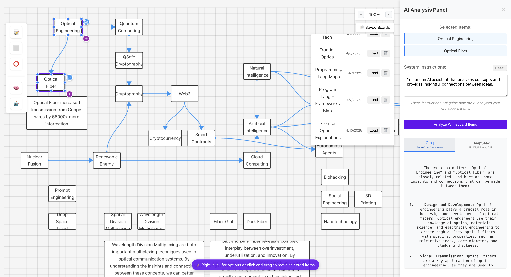

01
Worx-ai
AI engineer · New York · February 2026 – present
Enterprise AI and data systems so a client can put existing information to work in products: search, assistants, and apps.
02
IBM
Client Engineering · New York
AI engineer January 2023 – March 2026
Agentic assistants for enterprise clients. Retrieval so answers come from approved knowledge. Pipelines from data to production. Monitoring for reliability. Mentoring.
Production systems, clearer answers, and less hallucination. Golden Circle, 2025.
Data scientist October 2022 – January 2023
Machine learning for enterprise clients, carried through to production, with measurable client impact.
03
Mindra
Personal project · live
A topic becomes a mind map, and ideas expand on a whiteboard.

04
Other work
Ask AI
Compares models side by side and keeps a memory of the conversation. Open Ask AI
Soft robot
Evolutionary search for movement in simulation. Source
05
Education
Columbia Engineering · 2022
B.S. Computer Science, Intelligent Systems. QuestBridge.